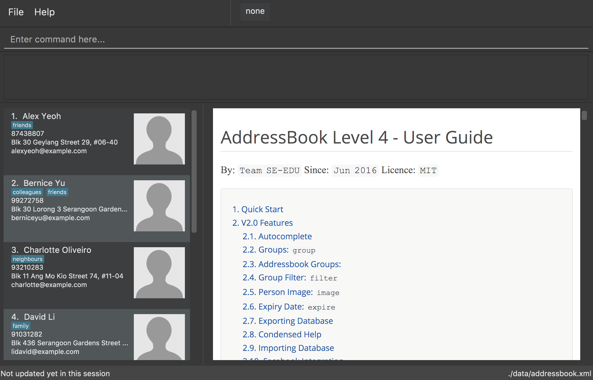

By: Team SE-EDU Since: Jun 2016 Licence: MIT
- 1. Quick Start
- 2. V2.0 Features
- 3. V1.0 Features
- 3.1. Viewing help :
help - 3.2. Adding a person:
add - 3.3. Listing all persons :
list - 3.4. Editing a person :
edit - 3.5. Finding all persons containing any keyword in their name:
find - 3.6. Deleting a person :
delete - 3.7. Adding a remark :
remark - 3.8. Select a person :
select - 3.9. Listing entered commands :
history - 3.10. Undo previous command :
undo - 3.11. Redo the previously undone command :
redo - 3.12. Clearing all entries :
clear - 3.13. Exiting the program :
exit - 3.14. Saving the data
- 3.1. Viewing help :
- 4. FAQ
- 5. Command Summary
1. Quick Start
-
Ensure you have Java version
1.8.0_60or later installed in your Computer.Having any Java 8 version is not enough.
This app will not work with earlier versions of Java 8. -
Download the latest
addressbook.jarfrom the releases tab. -
Copy the file to the folder you want to use as the home folder for your Address Book.
-
Double-click the file to start the app. The GUI should appear in a few seconds.
 -
Type the command in the command box and press Enter to execute it.
e.g. typinghelpand pressing Enter will open the help window. -
Some example commands you can try:
-
list: lists all contacts -
addn/John Doe p/98765432 e/johnd@example.com a/John street, block 123, #01-01: adds a contact namedJohn Doeto the Address Book. -
delete3: deletes the 3rd contact shown in the current list -
exit: exits the app
-
-
Refer to the Features section below for details of each command.
2. V2.0 Features
Make the addressbook more useful to a tourguide
2.1. Autocomplete
Pressing &tab; will attempt to autocomplete current command. Turns text red if not suitable command exists. Since v1.2 To see parameters for a command, press tab on a complete command. Pressing tab again will remove the parameters. If the command has no parameters then the text will turn red. Since v1.3
If there are multiple possible commands for a given input, i.e. 'e' could be 'edit', 'exit', or 'export', then a dropdown box will appear with the possible commands. These can be navigated using mouse or arrow keys and enter to select the desired command. Since v1.5
2.2. Person: group
Each person can now be assigned a group. The group is used to sort people into specific tours for the tourguide. Since v1.2
2.3. Addressbook Groups: group
The address book stores all user created groups and allows the user to add people into existing groups. Names must be one word and be unique. Since v1.3
Format:
-
group [name]creates a group called [name] if one doesn’t already exist. If one does, it will be deleted. -
group [name] [names…]creates a group called [name] and will add the people in the following arguments to it.
Example:
-
group trip Alice Bernice Grant→ creates a group called trip with Alice, Bernice, and Grant -
group trip→ deletes the previously created 'trip' group
2.4. Group Filter: filter
Ability to filter the UI display to only display selected groups. Bar across the top of the UI displays the current groups. The default filter is none and is applied to everyone in the addressbook. Since v1.3
Format: filter [groupname]
Example:
-
filter none -
filter trip
2.5. Person Image: image
Set and show an image for a person in the addressbook. Uses the index of a person to select them and a URL to the image path. Since v1.3.
e.g. image 1 /home/user/someexample.jpg
2.6. Expiry Date: expire
Set the expiry date of a person. The entry will be automatically removed from addressbook once it expires. Coming v1.5
2.7. Exporting Database
Export a working version of the database and the images associated to it to a directory specified.
Currently WIP but allows exporting to the addressbook home directry
e.g. export /home/user/
2.8. Condensed Help
Open a condensed help screen by default in place of the Google brwoser integration. Since v1.4
2.9. Importing Database
Import a working version of the database and the images associated to it from a directory specified. Coming v2.0.
2.10. Facebook Integration
Coming v2.0.
2.11. Linkedin Integration
Coming v2.0.
2.12. Admin Permissions
Allow usage of dangerous commands such as clear, export and import. Coming v2.0.
3. V1.0 Features
Command Format
-
Words in
UPPER_CASEare the parameters. -
Items in
SQUARE_BRACKETSare optional. -
Items with
…after them can have multiple instances. -
Parameters can be in any order.
-
Features with Admin in their description require admin permissions.
3.1. Viewing help : help
Format: help
3.2. Adding a person: add
Adds a person to the address book
Format: add n/NAME p/PHONE_NUMBER e/EMAIL a/ADDRESS [t/TAG] [d/EXPIRY DATE]…
| Persons can have any number of tags (including 0) Expiry date should be in the format of YYYY/MM/DD |
Examples:
-
add n/John Doe p/98765432 e/johnd@example.com a/John street, block 123, #01-01 -
add n/Betsy Crowe t/friend e/betsycrowe@example.com a/Newgate Prison p/1234567 t/criminal d/2017-10-10
3.3. Listing all persons : list
Shows a list of all persons in the address book.
Format: list
3.4. Editing a person : edit
Edits an existing person in the address book.
Format: edit INDEX [n/NAME] [p/PHONE] [e/EMAIL] [a/ADDRESS] [t/TAG] [d/EXPIRY DATE]…
Examples:
-
edit 1 p/91234567 e/johndoe@example.com
Edits the phone number and email address of the 1st person to be91234567andjohndoe@example.comrespectively. -
edit 2 n/Betsy Crower t/
Edits the name of the 2nd person to beBetsy Crowerand clears all existing tags. -
edit 3 t/friend d/2010-01-01
Set the tags of the 3rd person to befriendand edit the expiry date to be2010-01-01.
3.5. Finding all persons containing any keyword in their name: find
Finds persons whose names contain any of the given keywords.
Format: find KEYWORD [MORE_KEYWORDS]
Examples:
-
find John
ReturnsJohn Doebut notjohn -
find Betsy Tim John
Returns Any person having namesBetsy,Tim, orJohn
3.6. Deleting a person : delete
Deletes the specified person from the address book.
Format: delete INDEX
Examples:
-
list
delete 2
Deletes the 2nd person in the address book. -
find Betsy
delete 1
Deletes the 1st person in the results of thefindcommand.
3.7. Adding a remark : remark
Adds a remark to a person already in address book
Format: remark INDEX r/REMARK
Examples:
remark 1 r/ "Likes to code." Appends remark to the person at index 1
3.8. Select a person : select
Selects the person identified by the index number used in the last person listing.
Format: select INDEX
Examples:
-
list
select 2
Selects the 2nd person in the address book. -
find Betsy
select 1
Selects the 1st person in the results of thefindcommand.
3.9. Listing entered commands : history
Lists all the commands that you have entered in reverse chronological order.
Format: history
|
Pressing the ↑ and ↓ arrows will display the previous and next input respectively in the command box. |
3.10. Undo previous command : undo
Restores the address book to the state before the previous undoable command was executed.
Format: undo
|
Undoable commands: those commands that modify the address book’s content ( |
Examples:
-
delete 1
list
undo(reverses thedelete 1command) -
select 1
list
undo
Theundocommand fails as there are no undoable commands executed previously. -
delete 1
clear
undo(reverses theclearcommand)
undo(reverses thedelete 1command)
3.11. Redo the previously undone command : redo
Reverses the most recent undo command.
Format: redo
Examples:
-
delete 1
undo(reverses thedelete 1command)
redo(reapplies thedelete 1command) -
delete 1
redo
Theredocommand fails as there are noundocommands executed previously. -
delete 1
clear
undo(reverses theclearcommand)
undo(reverses thedelete 1command)
redo(reapplies thedelete 1command)
redo(reapplies theclearcommand)
3.12. Clearing all entries : clear
Admin: Clears all entries from the address book.
Format: clear
3.13. Exiting the program : exit
Exits the program.
Format: exit
3.14. Saving the data
Address book data are saved in the hard disk automatically after any command that changes the data.
There is no need to save manually.
Admin: Can export and import different databases - Coming v2.0.
4. FAQ
Q: How do I transfer my data to another Computer?
A: Install the app in the other computer and overwrite the empty data file it creates with the file that contains the data of your previous Address Book folder.
Q: Why do I need admin permissions to access some of the features?
A: This is in place to protect the content of the address book from misuse as well as adding another layer of protection from user error.
5. Command Summary
-
Add
add n/NAME p/PHONE_NUMBER e/EMAIL a/ADDRESS [t/TAG]…
e.g.add n/James Ho p/22224444 e/jamesho@example.com a/123, Clementi Rd, 1234665 t/friend t/colleague -
Clear :
clear -
Delete :
delete INDEX
e.g.delete 3 -
Find :
find KEYWORD [MORE_KEYWORDS]
e.g.find James Jake -
List :
list -
Help :
help -
Select :
select INDEX
e.g.select 2 -
History :
history -
Undo :
undo -
Redo :
redo -
Image :
image INDEX URL
e.g.image 1 /home/user/someimage.jpg